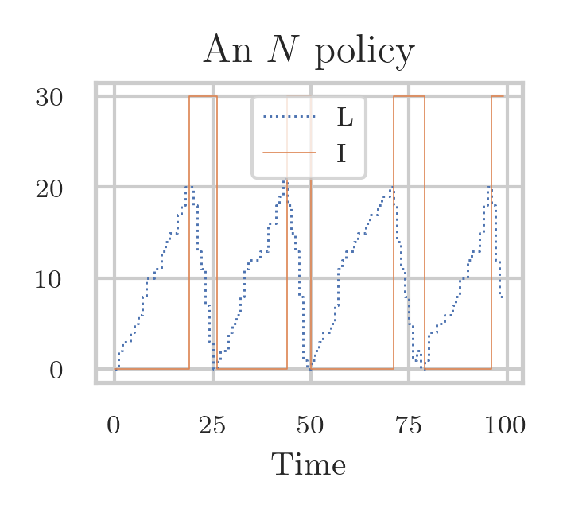

1. Simulating the Psychiatrists Case
In the previous section, we showed how to analyze a case with five psychiatrists acting as five parallel servers processsing a queue of patients waiting for an intake. Moreover, we proposed a good rule to control the queue length. In this section, we provide the Python code we used for the simulation leading to \cref{fig:psychiatrists}.
We need the following modules.
import numpy as np
from numpy.random import default_rng
import matplotlib.pyplot as plt
from fig_in_latex_format import apply_figure_settings
apply_figure_settings()
thres_low = 24
thres_high = 48
Recall that we compute the queue length recursively by first computing the number of departures \(d = \min\{L_{k-1}+a_{k}, c_{k}\}\) and then \(L_{k} = L_{k-1}+a_k-d\).
The next function follows this logic.
It first forms an empty array L to store all the queue lengths.
Then it applies the recursion via a for loop.
The loop has to start at \(k=1\) because it ’looks back’ at \(L_{k-1}\).
For generality, we can provide an optional queue level L0 if we want the queue to start at a level other than \(0\).
def compute_L(a, c, L0=0):
# L0 is the initial queue length
L = np.empty(len(a))
L[0] = L0
for k in range(1, len(a)):
d = min(L[k - 1] + a[k], c[k])
L[k] = L[k - 1] + a[k] - d
return L
Now we make the capacity schemes.
The first step is to form an array with \(5\) rows such that each row corresponds to the weekly capacity of each psychiatrist.
Since Python counts from 0 instead of 1, the row with index 0 corresponds to the first psychiatrist.
We can set all values of the entire row with index 0 with notation like p[0, :] where the colon refers to all indices of the columns.1
It evokes the dots in mathematical notation like the dots here: \(i = 1, 2, \ldots\)
Next, np.ones(n) makes a row array of just ones.
For each psychiatrist, we fill the related row in p with the appropriate capacity of that specific psychiatrist.
The result is a matrix that looks like the one in \cref{eq:6}.
def unbalanced_load(n):
p = np.empty([5, n])
p[0, :] = 1 * np.ones(n)
p[1, :] = 1 * np.ones(n)
p[2, :] = 1 * np.ones(n)
p[3, :] = 3 * np.ones(n)
p[4, :] = 9 * np.ones(n)
return p
The next function builds the matrix \cref{eq:9}.
def balanced_load(n):
p = np.empty([5, n])
p[0, :] = 2 * np.ones(n)
p[1, :] = 2 * np.ones(n)
p[2, :] = 3 * np.ones(n)
p[3, :] = 4 * np.ones(n)
p[4, :] = 4 * np.ones(n)
return p
We modify the capacity matrix so that it includes a holiday pattern.
This function spreads the holidays over the week so that we obtain \cref{eq:11}.
The operator \(\%\) computes the remainder after division.2
For example, \(17 \% 5 = 2\).
In the for loop, the variable \(j\) moves one column per iteration, and it cycles over the rows from \(0\) to \(4\).
The shape[1] returns the number of columns in a matrix.3
The function does not really need to return p because the change is in-place. (Ask ChatGPT what this means.) Here we return it so that all functions work in the same way.
def spread_holidays(p):
n_cols = p.shape[1]
for j in range(n_cols):
p[j % 5, j] = 0
return p
In the case of synchronized holidays, we set all capacities in one column to zero, cf. \cref{eq:19}.
The range function moves from \(0\) to the end in steps of \(5\).4
So it returns \(0, 5, 10, \ldots\).
def synchronized_holidays(p):
n_cols = p.shape[1]
for j in range(0, n_cols, 5):
p[:, j] = 0
return p
All is ready to start the simulation.
We set the seed of the random generator and simulate num_weeks of Poisson distributed weekly arrivals.
The matrix L will contain the lengths of the queues, one row for each different scenario.
As we have four capacity scenarios, we need four rows.
rng = default_rng(3)
num_weeks = 1000
a = rng.poisson(11.8, num_weeks)
L = np.zeros((4, len(a)))
In the first scenario, the capacity is balanced and holiday plans are spread over the weeks.
The weekly capacity \(c_{i}\) is equal to the sum of all rows in p that correspond to week \(i\). This is established by summing over axis=0 in p.
For example, in \cref{eq:11}}, the capacity for the first week is \(0+2+3+4+4\).
Once we have the weekly capacities stored in c, we can use the recursion for \(L\) to compute the queue lengths at the end of each week.
The other scenarios work likewise.
p = balanced_load(len(a))
p = spread_holidays(p)
c = np.sum(p, axis=0)
L[0, :] = compute_L(a, c)
p = balanced_load(len(a))
p = synchronized_holidays(p)
c = np.sum(p, axis=0)
L[1, :] = compute_L(a, c)
p = unbalanced_load(len(a))
p = synchronized_holidays(p)
c = np.sum(p, axis=0)
L[2, :] = compute_L(a, c)
p = unbalanced_load(len(a))
p = spread_holidays(p)
c = np.sum(p, axis=0)
L[3, :] = compute_L(a, c)
The code above suffices to make the left panel of \cref{fig:psychiatrists}.
For the right panel, we need the control rule \cref{eq:103}.
This works almost the same as the regular recursion for \(L\), but now we add or subtract an additional capacity e to the weekly capacity given in the array \(c\).
We use the result of \cref{ex:24}} to update \(L\).
def compute_L_with_control(a, c, e, L0=0):
L = np.empty(len(a))
L[0] = L0
for k in range(1, len(a)):
if L[k - 1] <= thres_low:
c[k] -= e
elif L[k - 1] >= thres_high:
c[k] += e
L[k] = max(L[k - 1] + a[k] - c[k], 0)
return L
We simulate the effect on \(L\) for the control rules with \(e=1\), \(e=2\), and \(e=5\). Recall from \cref{sec:constr-discr-time} that the total weekly capacity is 12 patients.
c = 12 * np.ones_like(a)
LL = np.zeros((4, len(a)))
LL[0, :] = compute_L(a, c)
LL[1, :] = compute_L_with_control(a, c, 1)
LL[2, :] = compute_L_with_control(a, c, 2)
LL[3, :] = compute_L_with_control(a, c, 5)
Finally, we can make a figure.
It’s easy to find on the web what ax1 and the other commands mean.
Note, L.min(axis=0) computes the minimum queue length per week, and L.max(axis=0) the maximum.
fig, (ax1, ax2) = plt.subplots(nrows=1, ncols=2, figsize=(6, 3), sharey=True)
ax1.set_title("No control on $L$")
ax1.set_ylabel("Queue length")
ax1.set_xlabel("Time (weeks)")
ax1.plot(L.min(axis=0), ":", label="min", color='k', lw=0.5)
ax1.plot(L.max(axis=0), "-", label="max", color="k", lw=0.5)
ax1.legend()
ax2.set_title("Control on $L$")
ax2.set_xlabel("Time (weeks)")
ax2.plot(LL[1], label="$e = 1$", color='green', lw=0.8)
ax2.plot(LL[2], label="$e = 2$", color='blue', lw=0.5)
ax2.plot(LL[3], label="$e = 5$", color='red', lw=0.5)
ax2.legend()
fig.tight_layout()
fig.savefig("../figures/psychiatrists.png", dpi=300)
Consider a single server serving two parallel queues. Queue \(i\) receives a minimal service capacity \(r^i\) every period. The reserved capacity unused for one queue cannot be used to serve the other queue. Any extra capacity beyond the reserved capacity, that is, \(c_k - r^2\), is given to queue 1 with priority. Claim: The next recursions are correct:
d1 = min(L1[k - 1], c[k] - r2)
c2 = c[k] - d1
d2 = min(L2[k - 1], c2)
L1[k] = L1[k - 1] + a1[k] - d1
L2[k] = L2[k - 1] + a2[k] - d2
An example is the operation room of a hospital. There is a weekly capacity, part of which is reserved for emergencies. It might not be possible to assign this reserved capacity to other patient groups, because it should be available at all times for emergency patients. As a result, unused capacity is lost. In practice, it may not be as extreme as in the model, but part of the unused capacity is still lost. ’Use it, or lose it’ often applies to service capacity.
Solution
Solution, for real
False.
Replace the code at line 2 by: c2 = c[k] - max(r1, d1).
The problem with the code of the question is that the reserved capacity for the first queue is not used in the computation of the capacity available for the second queue.
\label{ex:n-policies}
\begin{marginfigure} \includegraphics{../figures/N-policy.png} \caption{A queue under an \(N\)-policy.} \label{fig:npolicy} \end{marginfigure}
In the queueing systems 5
X-37B pregătit pentru lansare în conul protector al unei rachete Atlas V; sursa: Departamentul de Apărare al SUA.

 we have analyzed up to now, the server is always present to start serving jobs at the moment they arrive.
However, in cases in which there is a significant cost associated with changing the server from idle to busy
this condition is typically not satisfied.
we have analyzed up to now, the server is always present to start serving jobs at the moment they arrive.
However, in cases in which there is a significant cost associated with changing the server from idle to busy
this condition is typically not satisfied.
To reduce the average cost, we can use an \(N\) policy, which works as follows.6 \(N\)-policies are used to decide when to heat up a large oven. As soon as the system becomes empty (and the server idle), the server switches off. Then it waits until at least \(N\) jobs have arrived, and then it switches on. The server processes jobs until the system is empty again, then it switches off, and remains idle until \(N\) new jobs have arrived, and so on, cycle after cycle. Note that under an \(N\) policy, even though the load remains the same, the server has longer busy and idle times.
Derive recursions to model the situation in which jobs that arrive in period \(k\) can be served in that period. If the system length hits \(N\) (becomes empty) in period \(k\), the machine switches on (off) in period \(k+1\). Assume the machine is off at \(k=0\).
Hint
Introduce a variable \(I_k\in\{0, 1\}\) to keep track of the state of the server.
Then, \(I_{k+1} = \1{\L_k\geq N} + I_k \1{0<\L_k
Solution
Solution, for real
Understanding the state variable \(I_{k}\) is the hardest part.
import numpy as np
import matplotlib.pyplot as plt
import latex_figures
latex_figures.apply_figure_settings(True)
rng = np.random.default_rng(3)
num_weeks = 100
a = rng.poisson(1, size=num_weeks)
c = rng.poisson(5, size=num_weeks)
N = 20
L = np.zeros(num_weeks)
I = np.zeros(num_weeks) # on or not
for k in range(1, num_weeks):
I[k] = (L[k - 1] >= N) + I[k - 1] * (0 < L[k - 1] < N)
c[k] *= I[k]
d = min(L[k - 1] + a[k], c[k])
L[k] = L[k - 1] + a[k] - d
cm_to_inch = 1 / 2.54
fig_width = 6 * cm_to_inch
fig_height = 5.5 * cm_to_inch
xx = range(num_weeks)
plt.figure(figsize=(fig_width, fig_height))
plt.step(xx, L, ":", lw=0.7, where="pre", label="L")
plt.step(xx, 30 * I, "-", ms=0.5, lw=0.4, where="pre", label="I")
plt.xlabel('Time')
plt.legend()
plt.tight_layout()
plt.savefig("../figures/N-policy.png", dpi=300)
Note that when arrivals cannot be served in the period in which they arrive, it might be that the system is never empty. For instance, if \(a_{k}\sim\Unif{(4, 10)}\), then \(L_{k}\geq a_{k} \geq 4\) for all \(k\).
In the setting of the previous exercise, suppose it costs \(K\) to switch on the machine. There is also a cost \(\beta\) per period when the machine is on, and it costs \(h\) per period per customer in the system. Can you make a model to compute the total cost for the first \(T\) periods?
Solution
Solution, for real
The last line of the code is the most interesting. Ask ChatGPT to explain it to you if you find it hard.
beta = 0.5
K = 50
h = 1
cost = beta * I.sum()
cost += h * L.sum()
cost += K * sum((I[1:] > I[:-1]))
 This work is licensed by the University of Groningen under a
Creative Commons Attribution-ShareAlike 4.0 International License.
This work is licensed by the University of Groningen under a
Creative Commons Attribution-ShareAlike 4.0 International License.